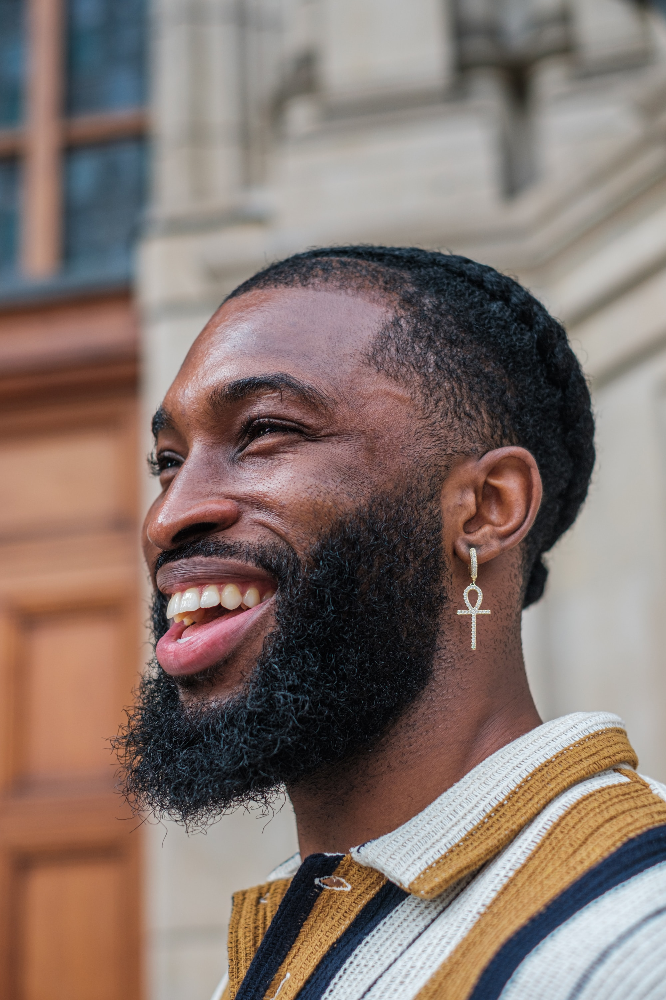

Clientes
Clientes satisfeitos

Ao ressaltar nossa unidade, esse grafite nos encoraja a superar as barreiras e preconceitos que nos separam. Convida-nos a encontrar pontos em comum e a trabalhar juntos na busca de um mundo mais igualitário e pacífico.

O poder do grafite "Todos somos um" está em sua capacidade de impactar visualmente e provocar reflexões profundas. Ele nos lembra que, apesar das diferenças, estamos todos conectados como parte de uma única humanidade.

Algumas pessoas encontram beleza e significado nas obras de grafite, enquanto outras podem não compartilhar do mesmo sentimento. O grafite continua a evoluir e desafiar as noções tradicionais de arte, espaço público e liberdade de expressão.